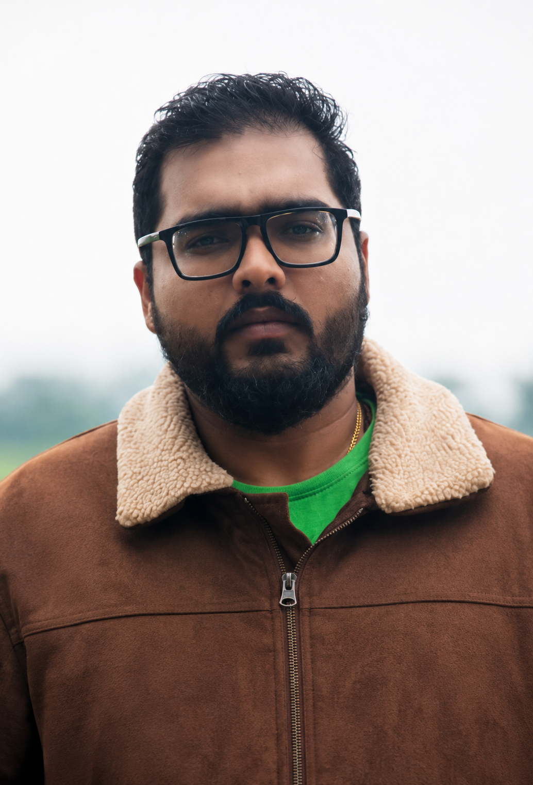

GreenVolt Dynamics Pvt. Ltd. — Est. 2024
The Feedstock Layer For India's Bio-Energy Transition
We reclaim degraded farmland in Uttar Pradesh, plant it with Super Napier grass, and turn the harvest into a dependable biomass supply for compressed biogas, gasification and biochar production.
What We Build
We Turn Dead Land Into A Fuel Supply
Most bio-energy ventures discover their feedstock problem after the plant is built. GreenVolt Dynamics solves it first. Since 2025, we have been reclaiming alkaline, low-fertility land around Patiyali in Kasganj district and replanting it with Super Napier grass — a high-yield perennial grown for biomass, not for the dinner plate.
Because we work reclaimed and non-arable land exclusively, every tonne we deliver adds to the energy feedstock supply without pulling land out of food production.
Reclaim
Degraded, high-alkalinity land brought back into productive use.
Cultivate
Roughly 100 acres of Super Napier under continuous, multi-year cultivation.
Harvest & Move
Mechanized cutting cycles and daily logistics, already running at 8–10 tonnes a day.
Convert
Feedstock routed into CBG, gasification and biochar pathways.
The Feedstock Engine
One Crop. Five Energy Pathways.
Super Napier is the input. This is where the harvest goes.
Proof Of Operation
Already Running, Before The Plant Is Built
Today, GVD harvests and transports 8 to 10 tonnes of fresh green biomass every day to Gaushalas across Kasganj and Etah. It's a smaller market than bio-energy, but a live one — and it forces us to solve the same problems a CBG or gasification offtaker will demand: continuous cutting cycles, mechanized harvesting, and logistics that turn up on schedule, every day.
The Crop Behind The Model
Why Super Napier, Specifically
Bio-energy projects live or die on feedstock reliability. The crop matters as much as the conversion technology.
Most biomass feedstocks are someone else's leftover: crop residue tied to a single harvest window, municipal waste with an unpredictable mix, food waste that varies with what a city ate that week. Super Napier is grown on purpose, for this purpose.
It's a perennial. Once established, it regrows after every cut for several years without replanting, and its lignocellulosic composition breaks down efficiently in anaerobic digestion — which is what makes it suited to CBG and gasification pathways, not just fodder.
Perennial, Not Seasonal
Regrows after each cut for several years before replanting is needed.
Continuous Cutting Cycles
New growth ready roughly every 50–75 days, smoothing out supply.
Built For Marginal Land
Low fertilizer and water needs suit degraded, alkaline soils.
Digester-Ready Composition
High cellulose content breaks down efficiently for CBG and gasification.
One planting. Years of continuous harvest.
Leadership
Two Founders, One Supply Chain
GVD pairs energy-sector fluency with on-the-ground execution.
Over five years inside India's biofuels and green energy sector, spent finding commercially viable paths toward sustainable fuels within the wider renewable energy ecosystem. Vaibhav sets GVD's read on where bio-energy demand is heading, and how feedstock supply needs to be built to meet it.

An entrepreneurial background in digital media, now applied to asset-heavy, climate-resilient value chains on the ground in Kasganj. Akshat works from one conviction: aggressive commercial scaling and real ecological stewardship aren't in tension. Done properly, they're the same job.
Built To Last
Growth That Doesn't Cost The Land
Scaling a feedstock business on degraded land only works if the land keeps giving. Everything here is designed around that constraint, not against it.
Reclaimed Land Only
We work exclusively on degraded, non-arable land, avoiding any food-versus-fuel conflict by design, not as an offset.
Carbon-Negative Pathways
Biochar routes convert surplus biomass into a soil amendment that locks carbon back into the ground it came from.
Carbon Drawdown While Growing
Super Napier pulls additional carbon out of the atmosphere as it grows, before any of it reaches a digester.
Rural Livelihoods
Technical training and steady, multi-year off-take agreements bring durable income to farmers and rural youth across Kasganj and Etah.
Surplus biomass converts to biochar, which returns carbon to the same soil it was grown on.
Get In Touch
Let's Talk Feedstock
For CBG, gasification, biochar or biomass-supply partnerships, reach the GVD team directly.